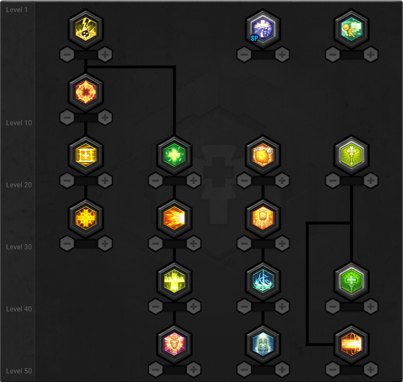
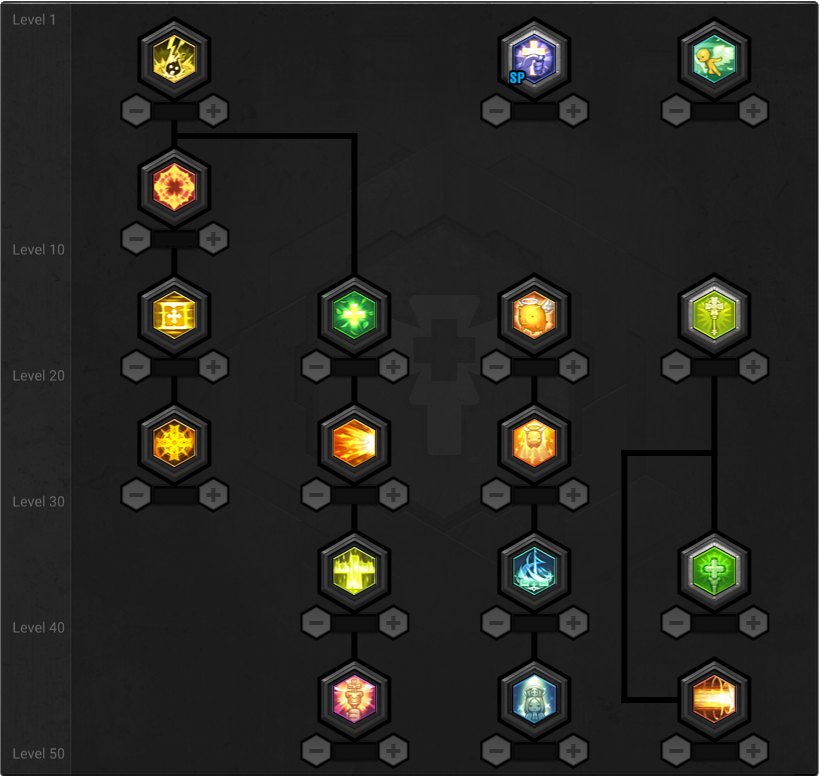

Welcome to the MapleStory 2 Interactive Skill Charts
MapleStory 2 Interactive Skill Charts is a set of web components which, with very little effort, let you add an interactive skill chart to your website or blog. This way your viewers can interact with the chart and see exactly what bonuses your chosen skill gives. So much better than just a screenshot!
Select a class and the skills you want to show and then copy the code above the skill chart into your site or blog.

 Archer
Archer

 Assassin
Assassin

 Berserker
Berserker

 Heavy Gunner
Heavy Gunner

 Knight

Knight

 Priest
Priest

 Runeblade
Runeblade

 Soul Binder
Soul Binder

 Striker
Striker

 Thief
Thief

 Wizard
Wizard
<script src="https://unpkg.com/maplestory-skills@^1/dist/maplestory-skills.js"></script>
What you see above is the editor mode. When you the code above the skills will no longer be editable, and you won't see the Remaining Skill Points. For information on how to add these features please visit the GitHub repository.
FAQ
- The skill charts are too big/small!
-
The chart automatically adjust to the size of it's container,
but if you still wish to change the size you can do so with CSS transformations.
ms-archer, ms-assassin, ms-berserker, ms-heavy-gunner, ms-knight, ms-priest, ms-runeblade, ms-striker, ms-thief, ms-wizard { transform: scale(0.8); /* adapt margin below if you change this */ transform-origin: top center; /* or "top left" if you don't wanna center it */ margin-bottom: calc(-770px * 0.2); /* to remove empty space at the bottom, or */ margin-right: calc(-815px * 0.2); /* if you use "top left" for transform-origin */ } - Can I let the user change the skills on my site too?
- Yes, you can. Please visit the GitHub repository for more information.
- Found a bug or have other questions?
- Don't hesitate to open a new issue in the Issue Tracker.